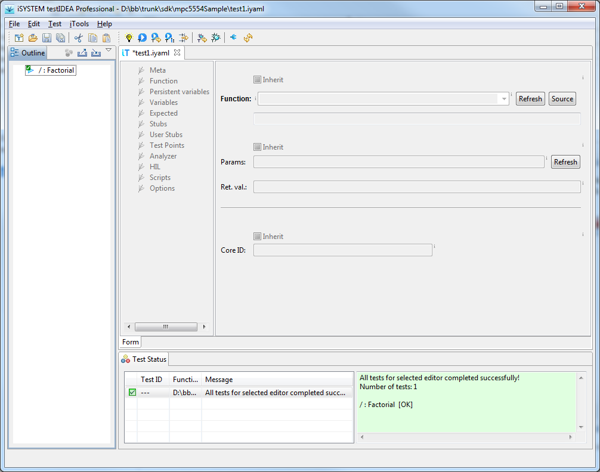
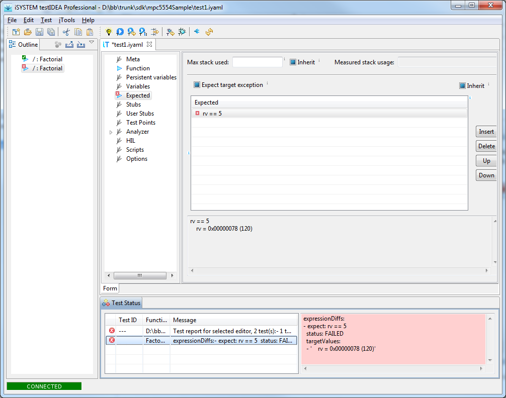

Test or equivalent toolbar icon (see tooltip
texts of toolbar icons to find out their meaning).
When the tests completes, iSYSTEM testIDEA marks each
test and section with a marker. If everything was OK, a green
check mark is shown, otherwise we get a red mark with cross
inside. The image below shows a test, which has passed successfully:

Below we can see test results with error:
